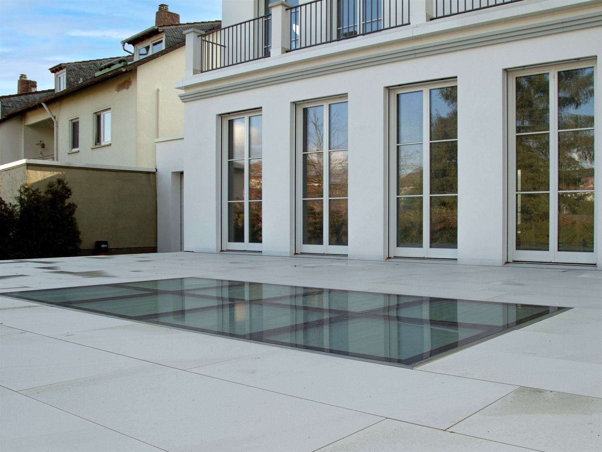
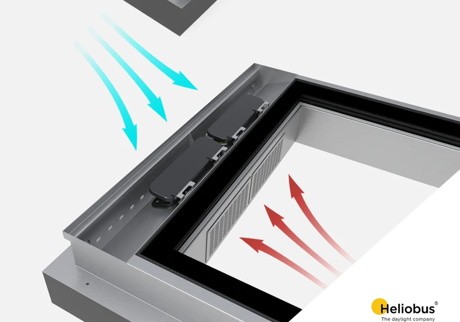

Pochozí světlíky: tři řady, jedna konstrukce.
Každý GLASSFLOOR je nosné izolační zasklení v nerezovém rámu, osazené v jedné rovině s okolním povrchem. Řady se liší tvarem a silou rámu, která po dokončení zůstane vidět. Konstrukce, nosnost i způsob osazení jsou u všech tří stejné.
Vyberte podle tvaru a rámu.

GLASSFLOOR chrome
Nerezový rám široký 4 cm zůstává přiznaný. Působí masivně a drží tvar i u větších rozměrů.
- Tvarčtverec a obdélník
- Otvor80 × 80 až 250 × 80 cm
- Rámnerez, výška 12 cm

GLASSFLOOR pure
Velmi úzký obvodový rám. Ze skla se stává téměř jen plocha v podlaze.
- Tvarčtverec a obdélník
- Otvor80 × 80 až 250 × 80 cm
- Rámnerez, minimální šířka

GLASSFLOOR circle
Kruh jako protiváha pravoúhlé stavbě, nebo naopak doplnění organické architektury.
- Tvarkruh
- Otvor⌀ 60 až 120 cm
- Rámnerez, výška 12 cm
Liší se rám, ne konstrukce.
Standardní provedení: pochozí typ, izolační dvojsklo z extra čirého skla, nerezový rám vně i uvnitř, osazení v jedné rovině s okolním povrchem.
Na míru: od 40 cm bez horní hranice, ve všech třech tvarech. Každá řada existuje i v požárním provedení FIRESTOP a některé ve variantách AIRFLOW a RWA.
Výbava: izolační trojsklo, systémový izolační rám, protiskluz, PRIVA-LITE, vyhřívání a senzory, LED osvětlení. Co se k čemu hodí
Když stavba potřebuje víc.

GLASSFLOOR FIRESTOP
Pochozí světlík, který zároveň plní funkci požárně dělicí konstrukce. Ve školách, nemocnicích a komerčních budovách.
- OdolnostREI 30 až REI 120
- Provedeníchrome, pure, circle

GLASSFLOOR AIRFLOW a RWA
Světlík, který kromě světla přivádí čerstvý vzduch, nebo se otevře pro odvod kouře a tepla při požáru.
- AIRFLOWvětrání klapkami
- RWAotevření až o 60 °

Na míru a výbava
Vlastní rozměr, tvar i únosnost. K tomu výbava podle situace na stavbě: vyhřívání, soukromí, osvětlení, protiskluz.
- Rozměrod 40 cm bez horní hranice
- Výbavadevět situací z praxe
Co je pochozí světlík GLASSFLOOR.
GLASSFLOOR je pochozí světlík a prosklená podlaha švýcarského výrobce Heliobus AG ze St. Gallen. Nosné zasklení v nerezovém rámu slouží jako běžně pochozí plocha terasy, střechy nebo podlahy a přivádí denní světlo do podlaží pod ní. V České republice ho dodává WT - WINDOWS TOMORROW s.r.o.
Nevíte, která řada se hodí?
Napište nám, co stavíte. Podle konstrukce a záměru doporučíme řadu, rozměr i způsob osazení.
Údaje o rozměrech, doplňcích a požární odolnosti vycházejí z podkladů výrobce Heliobus AG platných k 1. 9. 2026. Závazné jsou vždy podklady ke konkrétní zakázce.